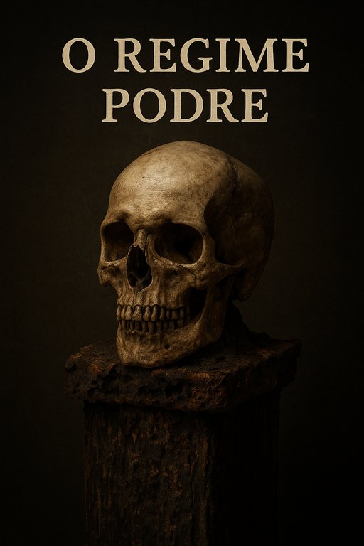

Publicado em 2025-05-30 08:58:10
Numa altura em que Portugal atravessa uma crise moral, social e política sem precedentes desde o 25 de Abril, surgem novos e velhos rostos a disputar o cargo de Presidente da República. Entre eles, um nome que dispensa apresentações: Luís Marques Mendes.
Com quase cinco décadas de presença constante nos corredores do poder, Mendes é a personificação da continuidade do sistema que tantos portugueses dizem querer ver reformado. Foi tudo: Secretário de Estado de Cavaco Silva, Ministro, Deputado, Líder do PSD e, mais recentemente, comentador residente nas televisões, onde durante anos ofereceu "análises" políticas de dentro para dentro, como quem conhece bem os bastidores do palco.
A sua candidatura, não sendo surpresa, é sintoma de um país preso ao passado. Um país onde os mesmos de sempre se oferecem como solução para problemas que eles próprios ajudaram a criar. Num momento em que se exige visão, coragem e rasgo estratégico para preparar Portugal para o século XXI, temos um candidato moldado pelos compadrios, pela partidocracia e pelos equilíbrios táticos que mantêm a mediocridade instalada.
Mendes representa o sistema, ponto final. O sistema que alimenta a burocracia em vez da eficiência. O sistema que protege os de cima e silencia os de baixo. O sistema que perpetua reformas de miséria e salários que envergonham.
E agora, esse mesmo sistema quer um dos seus como Chefe de Estado. Um presidente que não vai incomodar, não vai denunciar, não vai convocar consciências. Vai garantir estabilidade ao regime, e é isso que os bastidores pedem. É isso que os salões silenciosos e os gabinetes de advogados querem.
Mas será que Portugal precisa mesmo de um continuador? Ou precisa, com urgência, de um perturbador? De um verdadeiro defensor do povo e da dignidade nacional?
A candidatura de Marques Mendes é, portanto, mais um sintoma. Um sintoma de um país que ainda não encontrou o caminho da ruptura serena mas firme. Um país que ainda não entendeu que mudar de protagonistas sem mudar de guião é apenas teatro.
A democracia portuguesa está doente, mas não é com este tipo de medicamento que vai recuperar.
“O regime não caiu — mas apodreceu.
Troca de rostos, muda de discurso, mas o cheiro é o mesmo: compadrio, privilégio e decadência institucional.
Portugal precisa de uma ruptura — não de um novo gestor do velho sistema.”
“Mudar de protagonistas sem mudar de guião é apenas teatro. E o povo está farto de ser figurante.”
Por Augustus Veritas
Imagem cortesia de OpenAI (c)